Et Yemekleri
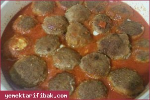
Kullanılan Malzemeler
Yarım kg kıyma
3 diş sarımsak
3 dilim bayat ekmek
1 çay bardağı süt
2 tane yumurta
1 çay kaşığı pul biber
1 çay kaşığı karabiber
1 çay kaşığı kekik
1 Su bardağı galeta unu
Sosu için:
2 tane domates
3 yemek kaşığı domates salçası
1 yemek kaşığı tereyağı
Kaşar Peynirli Soslu Köfte Yapılışı
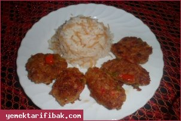
Kullanılan Malzemeler
500gr (yarım kilo) kıyma
1 adet soğan
3 diş sarımsak
bir orta boy patates
bir orta boy havuç
2 biber
1 domates
Kimyon, pul biber, karabiber, kekik
2-3 dilim bayat ekmek
tuz
1 yumurta
biraz maydanoz
Sebzeli Köfte Yapılışı
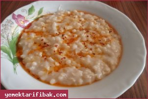
Kullanılan Malzemeler
2 su bardağı aşurelik buğday
1 tavuk göğsü
3 yemek kaşığı tereyağı
1 tatlı kaşığı pul biber
Keşkek Yapılışı
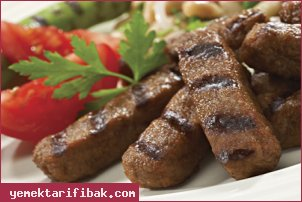
Kullanılan Malzemeler
1 kilo dana döş kıyma
2 çorba kaşığı kurutulmıuş ekmek içi
1 tane kuru soğan
1 tatlı kaşığı tuz
2 tatlı kaşığı karbonat
2 çorba kaşığı su
İnegöl Köfte Yapılışı
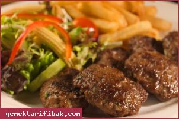
Kullanılan Malzemeler
500 gr dana kıyma
1 çay kaşığı karabiber
1-2 çay kaşığı kimyon
1 yumurta
Yarım demet maydanoz
Kızartmak için 1 bardak zeytinyağı veya ayçiçek yağı
2-3 dilim bayat ekmek içi
1-2 Soğan
Kuru Köfte Yapılışı
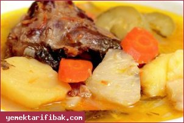
Kullanılan Malzemeler
1 kg Kemikli Koyun veya Kuzu Eti
10 Su Bardağı Su
4 Patates
2 Havuç
7-8 Arpacık Soğanı
1 Küçük Kereviz
1 Çorba Kaşığı Margarin
5-6 Karabiber Tanesi
1 Çorba Kaşığı Un
3 Yumurta
1 Limon Suyu
Tuz
Terbiyeli Et Haşlama Yapılışı
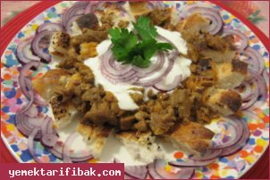
Kullanılan Malzemeler
Yarım kg kuşbaşı et
Yarım kg yoğurt
1 demet maydanoz
1 tane Bayat ekmek
2 çorba kaşığı tereyağı
2 diş sarımsak
2 soğan
Kimyon
Tuz
Tirit Yapılışı
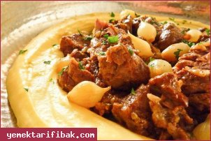
Kullanılan Malzemeler
200 gr kuşbaşı dana eti
1 yemek kaşığı salça
1 yemek kaşığı zeytinyağı
7-8 adet arpacık soğan
1 litre su
1 çorba kaşığı un
2 adet Knorr Tablet Et Bulyon
Bir miktar tuz
Bir miktar karabiber
Tas Kebabı Yapılışı
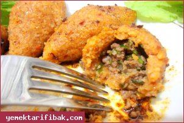
Kullanılan Malzemeler
700gr. içli köftelik bulgur (simit)
2 adet yumurta
2 avuç un
1 tatlı kaşığı salça
1 tatlı kaşığı pulbiber
Haşlamak için 3 lt kaynar su
Kızartmak için 150-200 gr tereyağı
İÇ MALZEME
500 gr. az yağlı kıyma
3 adet kuru soğan
1 tatlı kaşığı salça
1 tatlı kaşığı pulbiber
1 tatlı kaşığı reyhan
Tuz
İçli Köfte Yapılışı
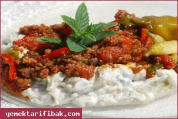
Kullanılan Malzemeler
4 adet orta boy közlenmiş patlıcan(fırında da közleyebilirsiniz)
1 adet orta boy soğan
1 kase yoğurt
1 tatlı kaşığı salça
250gr.köftelik kıyma
tuz
sıvı yağ
Ali Nazik Kebabı Yapılışı
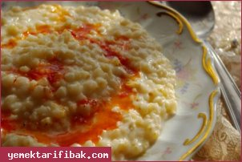
Kullanılan Malzemeler
4 bardak tam buğday ( haşlanmış ve kabuğu soyulmuş)
1 adet tavuk (haşlanmış ve tiftiklenmiş)
5 bardak sıcak su (arıtılmış)
1 çay bardağı sıcak su (sos için)
1 yemek kaşığı salça (sos için)
1 tutam kırmızı pul biber (sos için)
1 adet soğan (kabuğu soyulup iri küpler halinde doğranmış
Tavuklu Keşkek Yapılışı
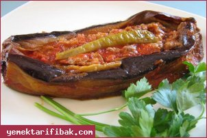
Kullanılan Malzemeler
6 adet küçük boy patlıcan (büyük ise ikiye bölebilirsiniz)
2 adet orta boy soğan
1 adet domates
8 adet yeşil biber
4 diş sarmısak
1 yemek kaşığı salça
sıvıyağ, tuz, karabiber, kırmızıbiber
200 gr çekilmiş et
Karnıyarık Yapılışı
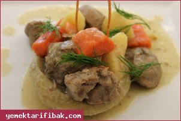
Kullanılan Malzemeler
4 adet enginar
Enginarları pişirmek için: 1 yemek kaşığı zeytinyağı, yarım limon suyu, tuz ve su
16 adet arpacık soğan
600 gr kuşbaşı kuzu eti
1 yemek kaşığı tereyağı
2 adet havuç
2 adet patates
1 çay bardağı iç bezelye
Yarım demet dereotu
1 yemek kaşığı un
1 tatlı kaşığı salça
Tuz ve su
Enginarlı Kuzu Yahni Yapılışı
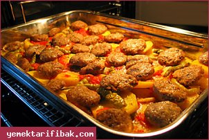
Kullanılan Malzemeler
1/2 kg az yağlı kıyma
1 adet soğan
1-2 diş sarımsak
1 yumurta
2-3 dilim bayat ekmek
10-15 adet maydonoz
1 çay kaşığı karabiber
1 çay kaşığı kimyon
1 çay kaşığı kekik
1 tatlı kaşığı tuz
5-6 adet patates
2-3 adet sivribiber
2-3 adet domates
Sosu için:
1 su bardağı domates rendesi
Fırında Patatesli Köfte Yapılışı
Diğer Tarifler